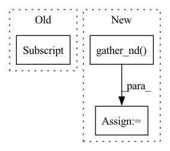

Pattern ID :42045
Before Change
// Start transition score and first emission
// shape: (batch_size,)
score = self.start_transitions[tags[0]]
score += emissions[0, ops.arange(batch_size), tags[0]]
i = Tensor(1, mindspore.int32)
while i < seq_length:
// for i in range(1, seq_length):After Change
// shape: (batch_size,)
tag_indices = ops.stack([seq_ends, arange(batch_size)])
// last_tags = tags[seq_ends, arange(batch_size)]
last_tags = ops.gather_nd( tags, tag_indices.T)
// shape: (batch_size,)
score += self.end_transitions[last_tags]
return scoreIn pattern: SUPERPATTERN
Frequency: 3
Non-data size: 3
Instances Fragment ID: 117760230
Project Name: mindlab-ai/mindnlp
Commit Name: 60bfafb3c99d7dec61f86c61b4f9286b7e0f3726
Time: 2023-03-25
Author: lvyufeng@cqu.edu.cn
File Name: mindnlp/modules/crf.py
M Class Name: CRF
N Class Name: CRF
M Method Name: _compute_score(5)
N Method Name: _compute_score(5)
M Parent Class: nn.Cell
N Parent Class: nn.Cell
M File Name: mindnlp/modules/crf.py
N File Name: mindnlp/modules/crf.py
M Start Line: 153
M End Line: 170
N Start Line: 159
N End Line: 183
Before Change
def __call__(self, bbox_labels_true, bbox_labels_pred):
// get_assignments https://github.com/Megvii-BaseDetection/YOLOX/tree/master/yolox/models/yolo_head.py/륁
valid_bboxes_pick = tf.where(bbox_labels_true[:, -1] > 0)[:, 0]
bbox_labels_true = tf.gather(bbox_labels_true, valid_bboxes_pick)
bboxes_true, labels_true = bbox_labels_true[:, :4], bbox_labels_true[:, 4:-1]
bboxes_true_nd = tf.expand_dims(bboxes_true, 1)After Change
object_true_idx = tf.where(out_object_true) // [num_picked_anchors, 1]
// l1_target loss, encoded [center_top, center_left, height, width]
anchors_centers_valid = tf.gather_nd( anchors_centers, is_anchor_iou_match_any_idx)
anchors_hws_valid = tf.gather_nd(anchors_hws, is_anchor_iou_match_any_idx)
out_bboxes_true_encoded = self.__encode_bboxes__(out_bboxes_true, anchors_centers_valid, anchors_hws_valid)
// tf.stop_gradient requires returning value been a single tensor with same dtype as inputs. Fragment ID: 117760220
Project Name: leondgarse/keras_cv_attention_models
Commit Name: 676534a8f82e32f70be91bc53da791194671e8db
Time: 2022-03-12
Author: leondgarse@gmail.com
File Name: keras_cv_attention_models/coco/anchors_func.py
M Class Name: AnchorFreeAssignMatching
N Class Name: AnchorFreeAssignMatching
M Method Name: __call__(3)
N Method Name: __call__(3)
M Parent Class:
N Parent Class:
M File Name: keras_cv_attention_models/coco/anchors_func.py
N File Name: keras_cv_attention_models/coco/anchors_func.py
M Start Line: 292
M End Line: 340
N Start Line: 291
N End Line: 339
Before Change
bbox_labels_true_assined = tf.stop_gradient(self.anchor_assign(bbox_labels_true, bbox_labels_pred))
bboxes_true, bboxes_true_encoded, labels_true, object_true_idx_nd = tf.split(bbox_labels_true_assined, [4, 4, -1, 1], axis=-1)
object_true_idx_nd = tf.cast(object_true_idx_nd, tf.int32)
object_true_idx = object_true_idx_nd[:, 0]
object_true = tf.tensor_scatter_nd_update(tf.zeros_like(bbox_labels_pred[:, -1]), object_true_idx_nd, tf.ones_like(bboxes_true[:, -1]))
bbox_labels_pred_valid = tf.gather(bbox_labels_pred, object_true_idx)
bboxes_pred, labels_pred, object_pred = bbox_labels_pred_valid[:, :4], bbox_labels_pred_valid[:, 4:-1], bbox_labels_pred[:, -1]After Change
// object_true_idx = object_true_idx_nd[:, 0]
// bbox_labels_pred_valid = tf.gather(bbox_labels_pred, object_true_idx)
bbox_labels_pred_valid = tf.gather_nd( bbox_labels_pred, object_true_idx_nd)
bboxes_pred, labels_pred, object_pred = bbox_labels_pred_valid[:, :4], bbox_labels_pred_valid[:, 4:-1], bbox_labels_pred[:, -1]
// anchors_centers = tf.gather(self.anchor_assign.anchors_centers, object_true_idx)
// anchors_hws = tf.gather(self.anchor_assign.anchors_hws, object_true_idx) Fragment ID: 117760218
Project Name: leondgarse/keras_cv_attention_models
Commit Name: 676534a8f82e32f70be91bc53da791194671e8db
Time: 2022-03-12
Author: leondgarse@gmail.com
File Name: keras_cv_attention_models/coco/losses.py
M Class Name: AnchorFreeLoss
N Class Name: AnchorFreeLoss
M Method Name: __valid_call_single__(3)
N Method Name: __valid_call_single__(3)
M Parent Class: tf.keras.losses.Loss
N Parent Class: tf.keras.losses.Loss
M File Name: keras_cv_attention_models/coco/losses.py
N File Name: keras_cv_attention_models/coco/losses.py
M Start Line: 177
M End Line: 185
N Start Line: 164
N End Line: 175